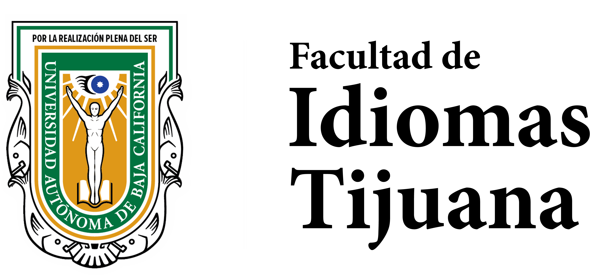
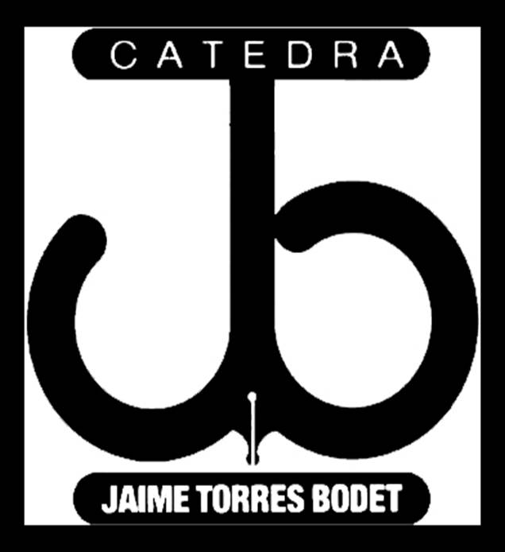
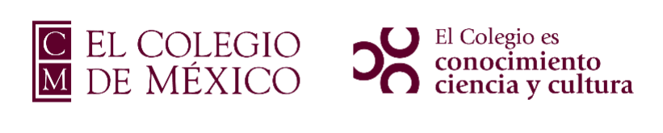
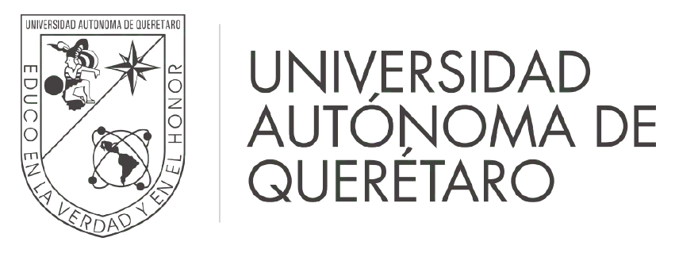
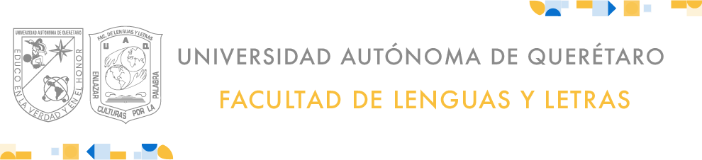
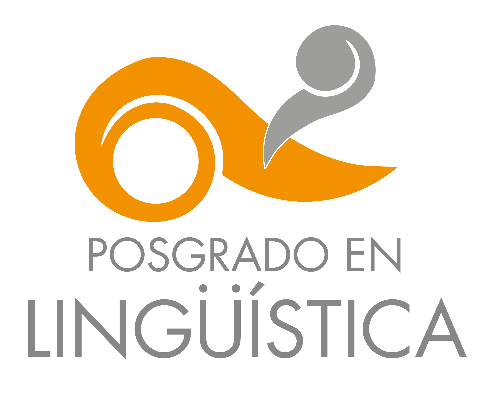
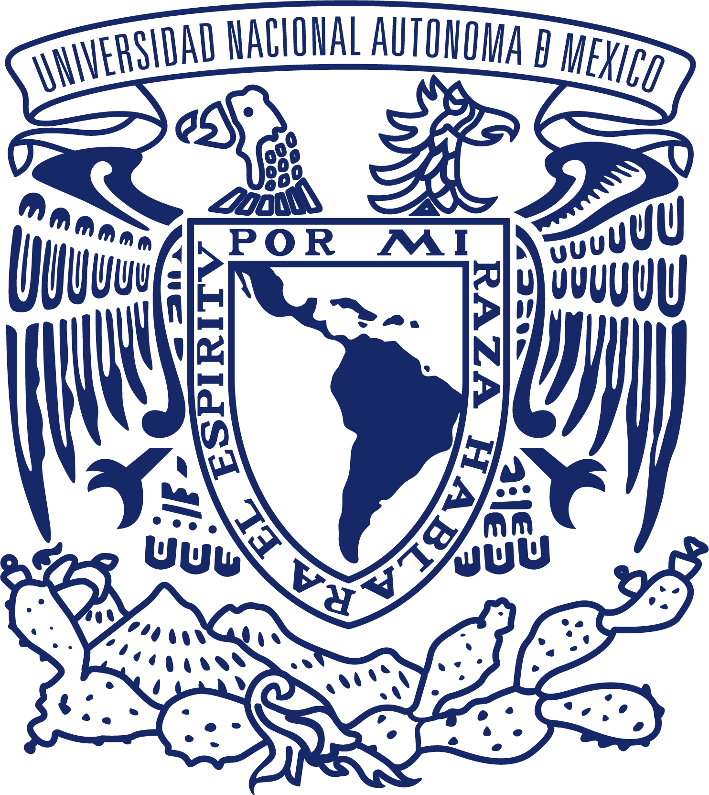

El Seminario Interinstitucional de Lingüística Historica (SILIH) y la Facultad de Idiomas de Tijuana de la Universidad Autónoma de Baja California convocan al primer coloquio *Proto- , el cual tendrá lugar los días 22 y 23 de octubre de 2026.
*Proto- está pensado como un encuentro bienal para las y los investigadores interesados en el cambio lingüístico, desde distintas perspectivas teóricas, niveles de análisis y lenguas de estudio.
Este coloquio tiene sus antecedentes en las Jornadas de Filología y Lingüística Histórica, cuyas primera y segunda edición se llevaron a cabo en 2023 y 2024, en la Universidad Autónoma de Querétaro y en El Colegio de México, respectivamente.
Alentados por la fructífera experiencia de estos dos eventos previos y con el fin de continuar fomentando la investigación sobre lingüística histórica en México, el SILIH invita a la primera edición de *Proto-, que esperamos pueda consolidarse como un espacio recurrente de reflexión y diálogo sobre el cambio lingüístico.
Cambio lingüístico desde distintas perspectivas teóricas, niveles de análisis y lenguas de estudio, incluyendo:
Facultad de Idiomas Tijuana, Universidad Autónoma de Baja California.
El envío de resúmenes se hará a través de la plataforma EasyAbs, en el siguiente enlace: https://easyabs.linguistlist.org/conference/PROTO/.
Cada autor podrá enviar un máximo de dos resúmenes, uno individual y uno en coautoría o dos en coautoría. Los resúmenes tendrán una extensión máxima de dos cuartillas (letra de 12 puntos con interlineado de 1.5) incluyendo ejemplos, figuras y bibliografía.






